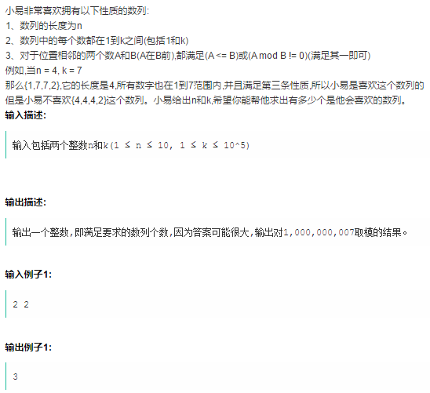

陪同学刷题准备校招，感觉这道题挺有趣，记录一下。
原题如下：

我不知道别人的解法是怎样，但我对于这种问题，很敏感地意识到可以建立递推式。这种感觉和《用3种颜色填涂N个格子的算法问题》里的感觉很相似。
如果我定义一个函数C(n,p)，表示所有长度为n的“小易喜欢的数列”中，最后一个数字是p的数列个数。那么很显然，C(1,1)=C(1,2)=...=C(1,k)=1。
对于某个特定的n，如果我已经知道了所有的C(n,p),p=1,2...k，那么如果得到C(n+1,p)呢？通过条件3可以得知，在长度为n的数列后面增加一个数字，只需要看欲增加的这个数字与原来最末尾的数字的关系。于是可以建立递推式了。
我要计算C(n+1,p)，相当于我要在一个长度为n的“小易喜欢的数列”末尾增加数字p。为了使得加上p后，成为一个长度为n+1的“小易喜欢的数列”，那么原本长度为n的数列的末尾数字i，需要满足i<=p或i%p!=0，换句话说，要么i不大于p，那么i不是p的倍数（>=2倍）。比如说k=40，p=10，那么本来的数列可以以1,2,3,...9,10,11,12,...,18,19,21,22,...,28,29,31,32,...38,39结尾，但不能以20,30,40结尾。有没有发现什么规律？如果要增加p，那么只要排除以2p,3p,4p,...结尾的数列就可以了！
因此，
C(n+1,p) = ∑C(n,i) , i != 2p,3p,4p,...
稍作转换，就成了
C(n+1,p) = ∑C(n,*) - C(n,2p) -C(n,3p) - C(n,4p) ...
于是递推式建立起来了！算法用Python描述如下：
# 输入参数
n,k=4,7
# C(1,1)=C(1,2)=..=C(1,k)=1
# 由于下标从0开始，用C[0]表示C(1,1),以此类推
C=[1]*k
# 由C(n,*)推出C(n+1,*)
def next_gen(k,C):
newC=[]
# p=1,2,3,...k, 依次求每一个C(n+1,p)
for p in range(1,k+1):
# ∑C(n,*)
val=sum(C)
# i=2p,3p,4p...，排除它们
for i in range(2*p,k+1,p):
# 注意下标从0开始，所以i-1
val-=C[i-1]
newC.append(val)
return newC
# 递推n-1次
for i in range(n-1):
C=next_gen(k,C)
print(C)
当然啦，一些细节还可以优化，比如sum(C)可以在for p循环之外。不过我做了对比实验，这道题，用C和Python写，速度相差将近300倍。。。我给出C的版本：
#include <stdio.h>
#include <stdint.h>
#define MOD 1000000007
// 求一个数组的和
uint64_t sum(uint64_t* array,uint32_t len)
{
uint64_t ret=0;
uint32_t i;
for(i=0;i<len;i++)
ret+=array[i];
return ret;
}
// 由C(n,*)推出C(n+1,*)
void next_gen(uint32_t k,uint64_t* C,uint64_t* newC)
{
// ∑C(n,*)
uint64_t sumC=sum(C,k);
// 求每一个C(n+1,p)
uint32_t p;
for(p=1;p<=k;p++)
{
// ∑C(n,*)
uint64_t val=sumC;
// i=2p,3p,4p...，排除它们
uint32_t i;
for(i=2*p;i<=k;i+=p)
// 注意下标从0开始，所以i-1
val-=C[i-1];
// 注意下标从0开始，所以p-1
newC[p-1]=val%MOD;
}
}
int main()
{
// 读取输入参数
uint32_t n,k;
scanf("%d %d",&n,&k);
// 双缓冲，轮流做输入和输出的C数组，高效
uint64_t bufC1[k];
uint64_t bufC2[k];
// 输入的C
uint64_t* C=bufC1;
// 递推得到的C
uint64_t* newC=bufC2;
// 循环变量
uint32_t i;
// 初始化输入用的C，即C(1,*)
for(i=0;i<k;i++)
C[i]=1;
// 递推n-1次
for(i=1;i<n;i++)
{
// 由C(n,*)得到C(n+1,*)
next_gen(k,C,newC);
// 交换数组
uint64_t* tmp=C;
C=newC;
newC=tmp;
}
printf("%d\n",sum(C,k)%MOD);
return 0;
}